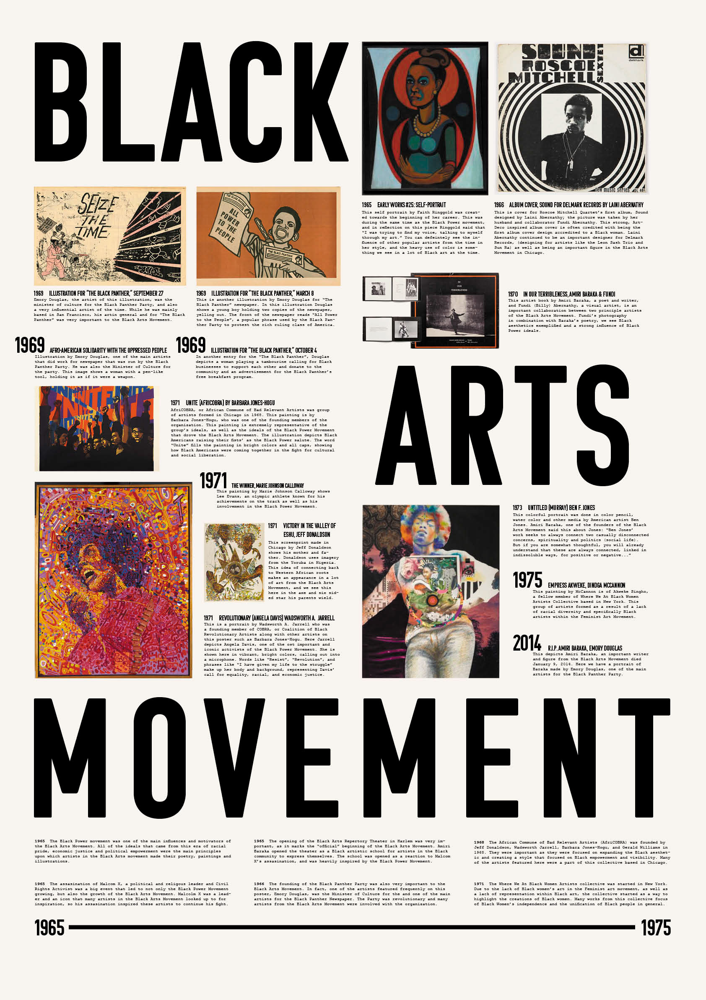
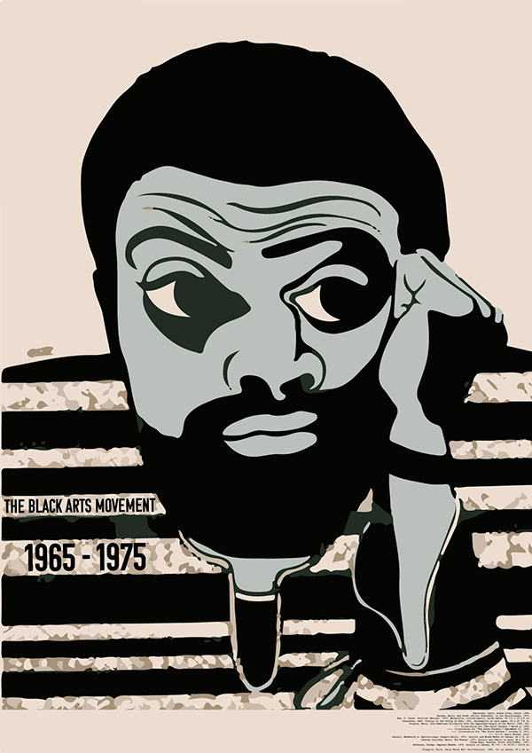
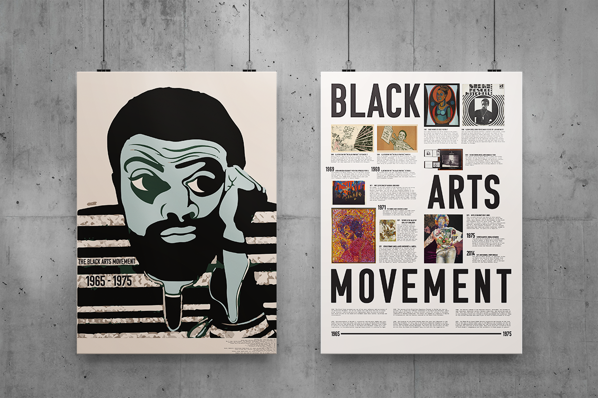

Galen Aubrey Hicks
black arts movement educational poster
This project was focused on the Black Arts Movement, highlighting Black Designers predominantly in Chicago that changed
design as a whole and pushed forward this new aesthetic informed and influenced by the Black Power Movement during the 60s and 70s.


